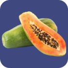
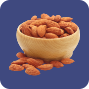
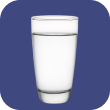

Hasil
Analisis feses Anda menunjukkan kondisi sembelit
menandakan masalah pencernaan konstipasi kronis
1 Perbanyak makan makanan kaya serat, seperti:
Buah:
Kiwi
Alpukat
Pir
Apel
Pepaya
Kacang-kacangan:
Kacang Merah
Kacang Almond
Kacang Mete
Kacang Hijau
Kacang Pistachio
2 Minum air mineral minimal 8 gelas atau 2 liter sehari

3 Melakukan aktivitas fisik atau berolahraga

Lompat Tali
Yoga
Fitness

Bersepeda

Lari/Jogging
Jika Anda mengalami gejala yang parah seperti nyeri hebat, pendarahan, atau penurunan berat badan yang tidak dapat dijelaskan, segera berkonsultasi dengan dokter terdekat